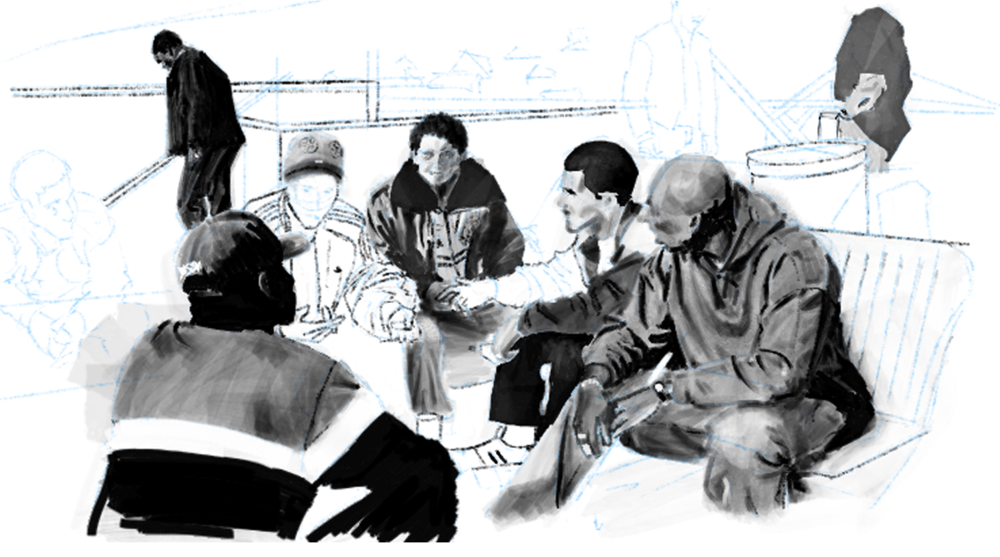
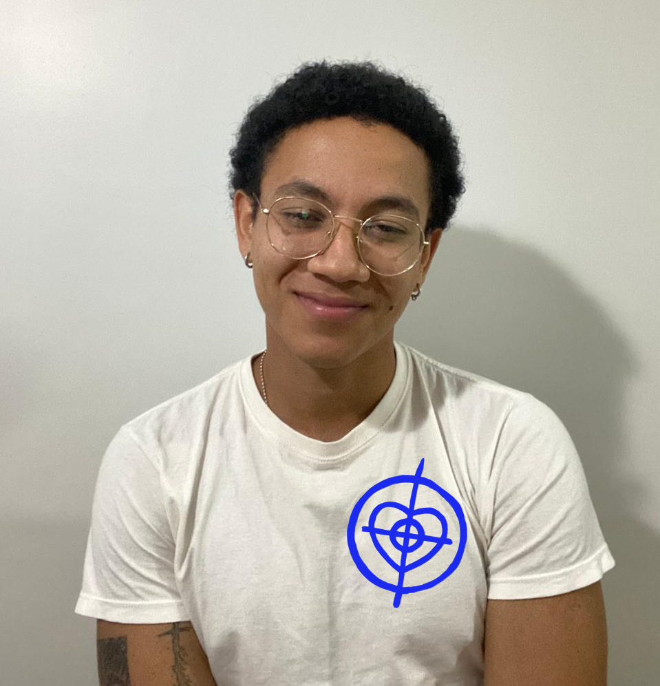

Sou Felipe Lourenço da Silva, tenho 23 anos, sou natural de Curitiba, Paraná, e estou atualmente no 5º período de Design de Produto na UFPR. Além dos estudos, também trabalho em projetos de design autoral e freelas voltados para arte, o que me permite aplicar meus conhecimentos em múltiplas áreas que se complementam.
Tive uma infância e adolescência marcadas por inúmeros fascínios e admirações. Música, filmes, esportes, quadrinhos e jogos compõem grande parte de quem sou e de quase tudo que crio. Gosto de mostrar às pessoas e falar sobre as coisas que amo; por isso, hoje assino minhas artes como FELOVESFE. Amo amar o que amo. Meu álbum favorito no momento é Street Songs, do Rick James. Queria ser ele.
Nos próximos cinco anos, meu objetivo é aprender, conhecer e experimentar o máximo que eu conseguir, seguindo o ciclo de amar e projetar esse amor nas coisas
